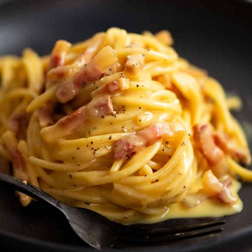

Carbonara

Description
Carbonara (Italian: [karboˈnaːra]) is a pasta dish made with eggs, hard cheese, cured pork, and black pepper. The dish took its modern form and name in the middle of the 20th century.
The cheese is usually Pecorino Romano, parmesan, or a combination of the two. Spaghetti is the most common pasta, but fettuccine, rigatoni, linguine, or bucatini are also used. Normally guanciale or pancetta are used for the meat component, but lardons of smoked bacon are a common substitute outside Italy.
Ingredients
- 3 large free-range egg yolks.
- 40 g Parmesan cheese , plus extra to serve.
- 1 x 150 g piece of higher-welfare pancetta.
- 200 g dried spaghetti.
- 1 clove of garlic.
Steps
- Boil the pasta. Meanwhile, fry pancetta in oil in a frying pan for a few mins until golden and crisp. Add garlic, fry for 1 min, then turn off the heat. Briefly whisk egg and yolks with most of the parmesan and some seasoning.
- Drain pasta, reserving a little of the cooking water. Add eggs and a tbsp of cooking water, then mix until pasta is coated and creamy. The heat from the pasta will gently cook the sauce. Stir in the pancetta and garlic then serve, topped with the remaining parmesan.